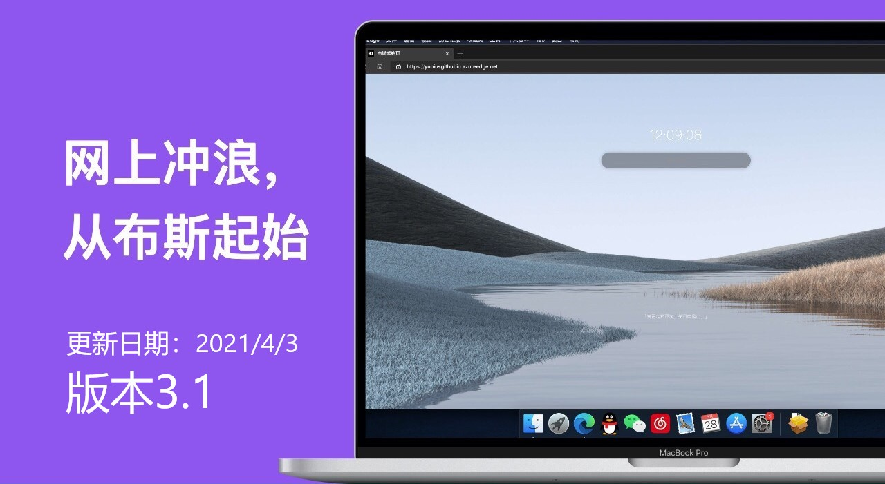

开始了解个性化服务与技巧 此界面迄让用户了解使用布斯的方法与技巧 设定致美壁纸 你的壁纸是否为空白？了解设置精致，美妙的动态壁纸 打开“设定” 在“致美壁纸”中选择“必应每日壁纸” 然后刷新网站 访问捷径 单击“time”组件以访问捷径 在捷径中单击“time”组件以退出捷径 您可以前往“设定”中编辑捷径
 当前版本：2144（发布日期2021/4/4） 欢迎使用布斯起始页！本项目建设于 2020/2/21，是一个基于开源项目维护的网站。 开发者：Yuxuan（yubius） and Yanji(SimSoft) 您可以请求我们添加您的个人首页，或公共站点 本项目的QQ群 上提交联系群主提交 介于采用 GitHub 托管的形式，本站属于“无后端”项目，一些可以提升用户体验的功能需要借助后端才能完成，我暂时没有去实现它。 类似项目： SimTab由SimSoft开发，功能强大，同样好用 SimTab 使用了： IconFont Kico Style FontAwesome paul开源项目